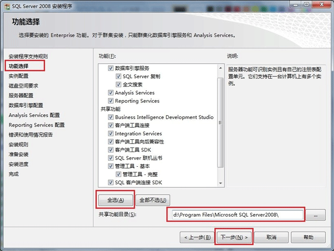

经历。。。
一开始电脑上有 Navicat,可以直接连接数据库,本来也够用了,前段时间学习 spring 和 jdbc 就下载了 mysql,心想也差不多够了吧,虽然祥哥早就把 sql server 安装包给我了,之前在公司另一台破旧的win7电脑上也安装成功了,所以也没太在意。
直到昨天,组长分配任务,让我帮忙写几个很简单的常量表,接到项目,连接数据库,建表,写接口,发现要写存储过程了,嗯,直接在 Navicat 上操作吧,结果居然不行！！！
问同事，才知道,原来 Navicat 可以连接 sql server(这个项目的数据库是sql server),但是不能写存储过程,貌似需要组长在数据库里面设置一下才行,然后得知他们都是自己有 sql server,没有麻烦组长,我就想要不我也装一下吧,说不定以后还用得到呢。
然后…开始了爬坑之旅…
一开始,心想,祥哥都给了我安装包和教程地址,不就是手到擒来的事吗?小 case!(得意脸~)
按照教程步骤来,第一步就GG了(教程地址:http://www.downcc.com/tech/4135.html)
Why?
因为 win10 一直提醒我安装 .net framework3.5!
我点击安装,它检查了一会告诉我网络有问题,有你妹妹的问题啊,网络明明是好的啊!
我点击跳过,它果真跳过,嗯，直接关闭了,我xxxxxxxx!
后来,我想,我老老实实的去下载.net framework3.5吧。
经过百度我知道,我win10自带的.net framework4.0,因为我一开始通过百度软件下载的那个.net安装工具来安装的,我想先安装个4.0吧,结果告诉我电脑有,这是我真的xxxxxx了!既然我有为什么不给我安装sql server???
然后继续通过那个下载工具下载了3.5版本的,一脸懵逼,擦擦擦!没用。。。
一直百度中。。。
期间浪费了很长时间。。。不过也不是没有收获。我知道为什么windows自动下载软件时报没有网络这个问题的解决方法了。
一般情况下,我们需要右击我的电脑,点击管理,弹出计算机管理窗口。点击服务和应用程序,然后点击服务(看下图的红框框),找到windows Update改成手动,然后启动,这个不启动,windows怎么联网下载呢?
然后,继续爬坑。。。
就这样一直待到21:30左右,老板看没什么人了我还在,估计内心在想,这小伙很不错,沉迷敲代码无法自拨,走近一看,我日XXXXX,你丫的在看什么???
这时，我只好舔着脸说,老板,我安装 sql server 失败了。(老板不想和我说话。。。)
好吧,老板过来帮我操作一波。我问他我win10自带的4.0为什么不行,老板说,人家要的是3.5!
然后让我继续通过windows自动下载3.5版本的。
电脑一直在那连接,终于连接好了,开始下载,但几乎没动。。。
老板叹了口气,明天再来下吧。。。
第二天,天气不好,但我的心情很好,因为我觉得一早过来肯定刷刷刷的把sql server安装好,hahahahahaha!
人不能太得意!(没事,放在心里就好,哈哈哈哈哈哈哈)
嗯,果不其然,又TMD遇到坑了!我擦你XXXX!
好不容易等到windows把.net framework3.5下载好,结果sql server检查环境时说重启电脑失败。好吧,我傻逼嘻嘻的重启电脑,顺便去倒个茶,跟祥哥说一下进展,结果,幸亏我说了进展,祥哥立马指出,你重启电脑也没用的,需要删除注册表!我日。。。
多亏了自己多嘴说了一下,避免了一个坑,继续百度。
删注册表的步骤教程:https://jingyan.baidu.com/article/a24b33cd52a0b919fe002bae.html
OK！Let’s go!
然后,我又遇到坑了。。。在下面这一步,由于当时没截图,只能找个成功的图展示下大概位置。

这里我点击下一步时,报错:属性不匹配。存在属性(Directory, Archive)，包括属性(0)，不包括属性(Archive, Compressed, Encrypted)。
心塞,一波三折,不过好在有百度。解决方案:http://blog.csdn.net/guet_kite/article/details/69952196
大意就是在C:\Program Files里找到“Microsoft SQL Server”文件夹，右键属性—高级—取消勾选“可以存档文件夹”—确定—应用。和C:\Program Files (x86)\Microsoft SQL Server 的也改一下 属性>>高级>>可以存档的文件夹 （取消√）。
这样就解决了。
然后我继续紧跟着教程走,终于没报错了(期间有一步让我们输入内置数据库管理员密码,其实就是设置密码),OK!安装完成,真不容易,不过好在自己解决了,为了防止自己忘记,遂记录下来。